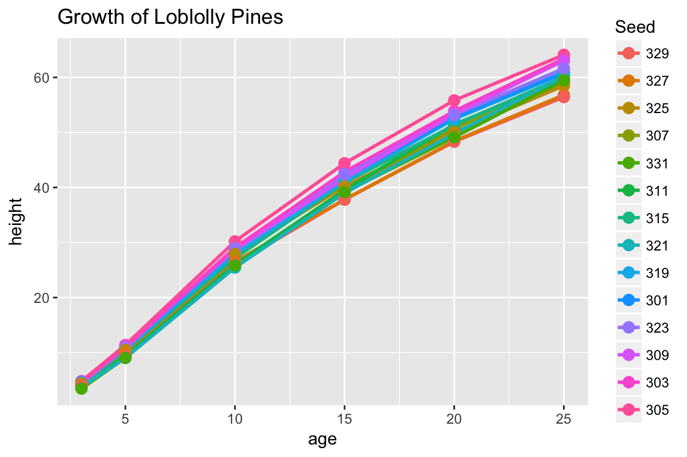
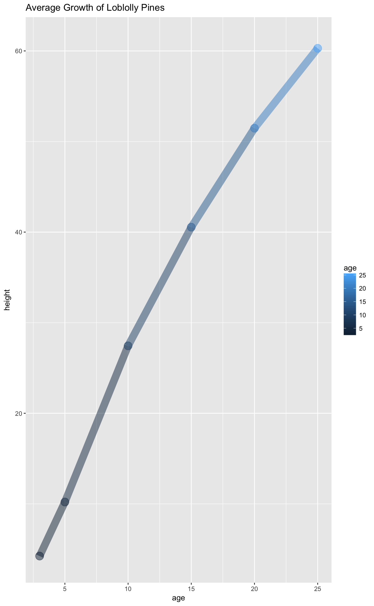
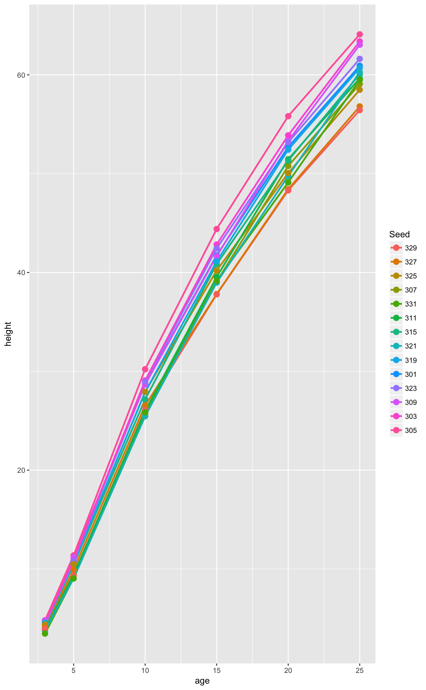
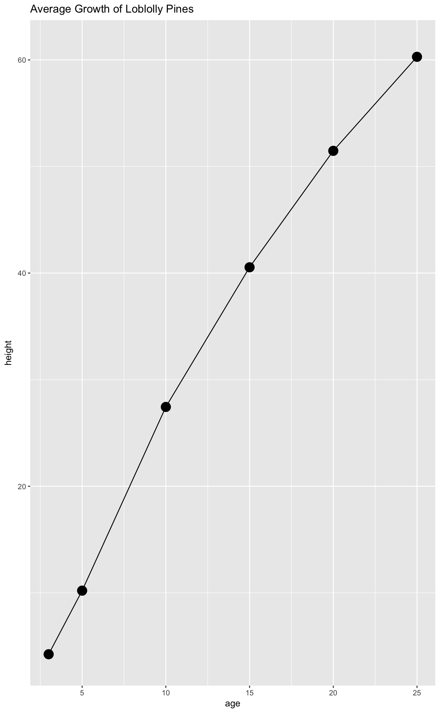
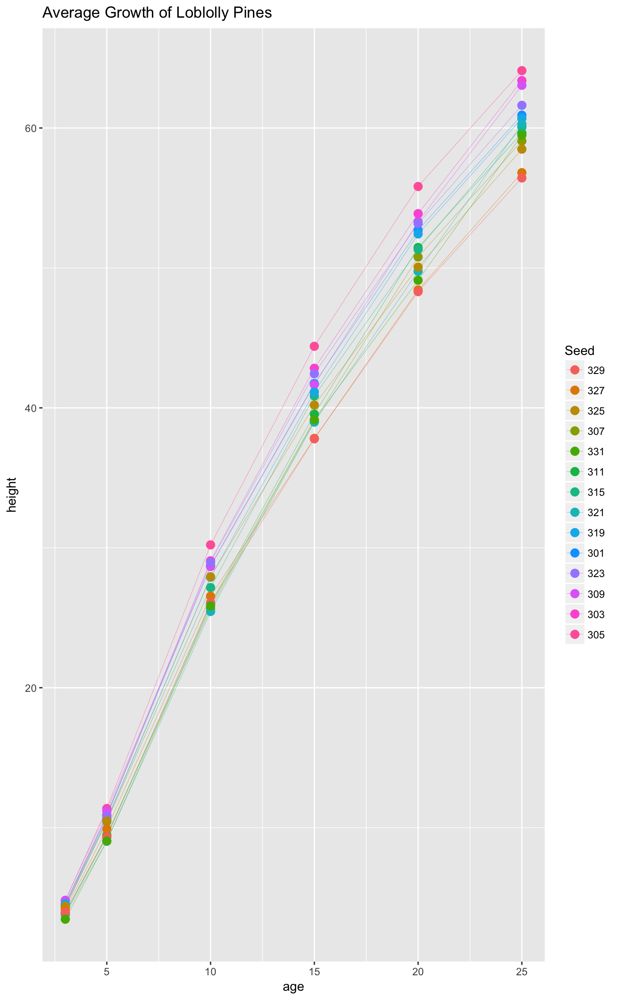

Composing Templates & Functions
Doug Kelkhoff
2018-03-30 21:39:59
Overview
ggpackets is most powerful when it’s being used to build template functions. By using it as a framework for packaging components of a ggplot into a single object, it provides a simple framework for constructing full featured ggplot wrappers. Most importantly, this will handle a wealth of ggplot-naitive parameters, exposing complete control over the components of a plot with minimal added syntax. That’s not to say there is no work to be done - to elegantly handle parameters intuitively and with minimal syntactic burden on the end user, there might be some amount of argument handling in order to satisfy the ideal user interface. The goal is to allow the programmer to focus on building around the usability of their function instead of the nuances of constructing plots and handling interactivity with the extensible ggplot ecosystem.
Composing a template
First, before we get too far along, ggpackets is nearly useless without components from ggplot2. Let’s get that loaded.
library(ggplot2)To build our first template, we’ll simply add a few layers to a ggpacket object. We’ll specify some aesthetic parameters - the size the line layer (geom_line()) and the point layer (geom_point()).
ggpk_my_template <- ggpacket() +
geom_line(size = 1) +
geom_point(size = 3)ggplot(Loblolly) +
aes(x = age, y = height, color = Seed) +
ggpk_my_template +
ggtitle('Growth of Loblolly Pines')
Although this might be helpful for making quick, reusable code, it does not provide much flexibility and is for all intents and purposes equivalent to list(geom_line(size = 1), geom_point(size = 3)). Perhaps the syntax is a little more familiar to those that use ggplot regularly, but aside from that, this simplist form provides very little real value.
Wrapping a template in a function
Where the power of ggpackets begins to shine is in its transparent argument handling. If we want to bundle up our function above, but also want to provide optional handling of additional ggplot parameters, then ggpackets provides much of that functionality with very little additional syntax. Here we use the ggpack() function to articulate parameters to each layer and lump in any extra paramaters passed to our function.
ggpk_my_template <- function(...) {
ggpack(geom_line, size = 1, ...) +
ggpack(geom_point, size = 3, ...)
}ggplot(Loblolly) +
aes(x = age, y = height) +
ggpk_my_template(stat = 'summary', color = age, fun.data = mean_se, size = 5, alpha = 0.5) +
ggtitle('Average Growth of Loblolly Pines')
In the function we declared above, all arguments passed to our wrapper function get filter down into all the internal layers. When we pass through the ..., we pass through any unnamed arguments from the parent function.
In fact, when we call the function, we can pass any arguments that would typically get passed to either of the ggplot functions wrapped inside of it, geom_line and geom_point. If we choose to pass both the data and mapping parameters (typically set using the ggplot() and aes() functions when constructing a ggplot object), we could even use this as a standalone function as shown below.
Be aware that this usage isn’t particularly intuitive without a bit of added documentation. If you’re building a function for someone else to use or to export from a package you’re making, it’s probably worth writing up some good documentation about what parameters you expect people to use.
ggpk_my_template(data = Loblolly, x = age, y = height, color = Seed)
Granular Parameter Passing
There is one lingering issue. In this case, all parameters are being passed to both of the ggplot layers wrapped inside of our function. You can see the impact of this issue above, because both the size (thickness) of the lines and the size (diameter) of the points changed when we set a new size. If we want to control one or the other independently, we need a more precise way of passing parameters. This can be addressed by adding an identifying string to each of our layers using the id parameter to ggpack().
If we want to restrict parameters to only one layer or another, ggpackets can handle the filtering of parameters through to each of the layers by parsing the parameters for prefixes that match that particular layer’s id. For example, if a layer has an id = 'my_ggplot_layer', then we might pass the function a parameter like my_ggplot_layer.size (the id and parameter name separated by a period) to set the size parameter of that particular layer without affecting the others.
ggpk_my_template <- function(...) {
ggpack(geom_line, id = 'line', size = 1, ...) +
ggpack(geom_point, id = 'point', size = 3, ...)
}ggplot(Loblolly) +
aes(x = age, y = height, color = Seed) +
ggpk_my_template(point.size = 5, line.size = 0.5) +
ggtitle('Average Growth of Loblolly Pines')
Lists are also permitted as an id, allowing for any one of a number of different prefixes to capture arguments for a particular layer.
ggpk_my_template <- function(...) {
ggpack(geom_line, id = c('all', 'line'), size = 1, ...) +
ggpack(geom_point, id = c('all', 'point'), size = 3, ...)
}ggplot(Loblolly) +
aes(x = age, y = height) +
ggpk_my_template(all.stat = 'summary', all.fun.data = mean_se,
point.size = 5, line.size = 0.5) +
ggtitle('Average Growth of Loblolly Pines')
Default, User and Fixed Parameters
The ordering of the parameters passed to any layer carries its own significance and can be used to exercise further control over how your function operates. If a parameter is passed to the layer more than once, the last instance always takes priority. This includes parameters passed as a list via the dots parameter. This allows calls to be constructed in a way that dictates which arguments are set in stone and which can be ovewritten by the user.
Take for example the following function where all ellipses parameters are passed through to the layers using the dots parameter. In the first layer, size is declared before the parameters passed in by the user, whereas the second has size passed after the user parameters.
ggpk_my_template <- function(...) {
ggpack(geom_line, id = 'line', size = 3, ...) +
ggpack(geom_point, id = 'point', ..., size = 3)
}The user will be able to set the size of the line layer, but will be unable to change the size of the point layer because the last size parameter will always take precedent (even if it’s passed with a prefix, like point.size). This gives considerable control over what impact the user can have over the plot template.
ggplot(Loblolly) +
aes(x = age, y = height, color = Seed) +
ggpk_my_template(line.size = 0.1, point.size = 10) +
ggtitle('Average Growth of Loblolly Pines')